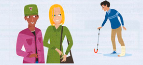

5
Knowing and understanding (Biết và hiểu)
A
Knowing and not knowing (Biết và không biết)
| knowing (Biết) | meaning (Nghĩa) |
|---|---|
| Cô ấy knows hệ thống inside out (hiểu rất rõ hệ thống từ trong ra ngoài). | Cô ấy biết rõ mọi chi tiết của hệ thống. |
| Khi nói đến địa lý, anh ấy chắc chắn knows his stuff (rất am hiểu lĩnh vực của mình). | Anh ấy có kiến thức rất tốt về lĩnh vực đó. |
| Tựa sách đó has a familiar ring to it (nghe có vẻ quen quen). Tôi nghĩ mình đã đọc nó từ lâu rồi. | Nghe có vẻ quen thuộc / Tôi nghĩ tôi đã nghe nói về nó trước đây. |
| Tôi không chắc mình có biết cô ấy không, nhưng cái tên đó rings a bell (nghe quen quen). (thường được dùng phổ biến với từ name [tên]) | Tôi có ký ức mơ hồ về ai đó có tên đó, nhưng không thể nhớ chính xác. |
| not knowing (Không biết) | meaning (Nghĩa) |
|---|---|
| Tôi haven't (got) / don't have a clue (không có một manh mối nào) về cách đi đến nhà cô ấy. | Tôi hoàn toàn không biết. |
| Tôi haven't (got) / don't have the faintest idea (không có một chút ý niệm nào) về nơi cô ấy sống. | Tôi thực sự hoàn toàn không biết. |
| Tôi haven't (got) / don't have the foggiest (idea) (hoàn toàn mù tịt) về việc cái công tắc này dùng để làm gì. | Tôi tuyệt đối hoàn toàn không biết. |
| Tôi can't for the life of me (dù có chết cũng không thể) nhớ nổi tên của cô ấy. | Tôi hoàn toàn không thể nhớ ra. |
| Dạo này tôi hơi out of touch (tối cổ / mất kết nối) với máy tính rồi. | Tôi đã từng biết về chúng, nhưng hiện tại không nắm được những phát triển mới nhất. |
| Tôi xin lỗi, cái tên đó doesn't ring any bells with me (không gợi lên chút ấn tượng nào với tôi). (thường được dùng phổ biến với từ name [tên]) | Tôi không nghĩ mình từng nghe tên đó trước đây; nó rất xa lạ. |
B
Coming to conclusions (Đi đến kết luận)
Tôi thực ra không biết bạn đang ở đâu, nhưng Mark nói rằng bạn đang ở cùng một người họ hàng. Vì vậy tôi đã put two and two together (rút ra kết luận từ những dữ kiện đã biết) và đoán đó là người cô của bạn ở Manchester. [rút ra kết luận từ những sự thật mà tôi đã biết]
Tôi xin lỗi, tôi đã got (hold of) the wrong end of the stick (hiểu sai hoàn toàn vấn đề). Tôi lại cứ nghĩ là bạn đang phàn nàn về điều gì đó. [đi đến kết luận sai lầm]
